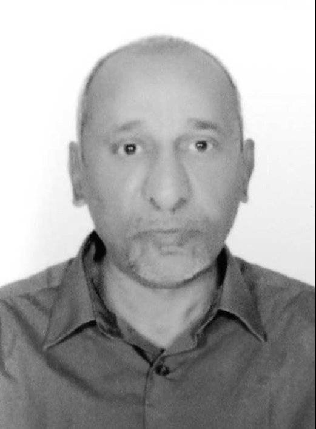

Prof. Mohamed Y. Shalaby
Associate Professor of Electronics & Communications Engineering
Imam Mohammad Ibn Saud Islamic University
Faculty of Engineering, Riyadh, Kingdom of Saudi Arabia

Professional Summary
Distinguished researcher and educator with over 35 years of expertise in nonlinear optics, optical communications, fiber optic sensors, and photonic signal processing. Ph.D. in Nonlinear Optics from University of Limoges, France (1993). Author of 60+ peer-reviewed publications, 10+ funded research projects, and 8 granted U.S. patents. Current research focuses on Optical Coherence Tomography, AI-enhanced environmental monitoring, fiber laser systems, and smart energy optimization for Saudi Arabia.
Research Interests
Nonlinear Optics & Spatial Solitons
Optical Coherence Tomography (OCT)
Fiber Optic Gyroscopes & Inertial Sensors
Environmental Pollution Detection
AI/ML for Optical Systems
High-Power Fiber Lasers
Photonic Signal Processing
Free-Space Optical Communications
Smart Grid & EV Charging Systems
Education
Ph.D. in Electronics and Optics (Nonlinear Optics)
University of Limoges, France | 1990–1993
Thesis: "Interaction experiments between auto-guided beams 'Solitons'; New picosecond photonic applications"
Grade: Très honorable avec félicitations du jury
Supervisors: Prof. C. Froehly & Dr. A. Barthélemy (IRCOM, U.A. C.N.R.S. N° 356)
M.Sc. in Optical Communications
Ain Shams University, Egypt | 1984–1989
Thesis: "Chromatic dispersion control in single mode optical fibers" | Grade: Excellent
DEA in Opto-electronics
Institut National Polytechnique de Grenoble, France | 1989
Thesis: "Microlenses fabrication on glass by ionic exchange" | Grade: Very Good
B.Sc. in Electronics and Communications
Ain Shams University, Egypt | 1979–1984
Grade: Excellent with Honors | Graduation Project: Microprocessor controlled alarm security system
Professional Experience
Associate Professor
Imam Mohammad Ibn Saud Islamic University, Riyadh, KSA | Nov 2013 – Present
- Lead research projects funded by KACST, GADD, PSDSARC, and University Deanship
- Supervise graduate students in photonics, optical sensing, AI applications, and energy systems
- Teach advanced courses: Optical Communications, Nonlinear Optics, Signal Processing, Microwave Engineering
- Secure and manage competitive research grants totaling multiple funded projects
Associate Professor → Assistant Professor
Ain Shams University, Faculty of Engineering, Cairo, Egypt | Aug 2008 – Nov 2013
- Conducted defense-related research on Fiber Optic Gyroscopes and Transceivers for Egyptian Army
- Published extensively on fiber Bragg gratings, soliton propagation, and OCT systems
- Supervised M.Sc. and Ph.D. students in optical communications and photonic devices
Assistant Professor
Telecom & Information College, Riyadh, KSA | Jan 1997 – Aug 2008
- Developed curriculum for optical communications and microwave engineering programs
- Initiated international collaborations with French research laboratories (IRCOM, LEMO)
- Published foundational work on soliton interactions and nonlinear optical switching
Selected Publications (2020–2026)
Shalaby, M. Y., et al. (2025). System and method for target detection and energy delivery. U.S. Patent 12,483,038-B1.
View Patent
Shalaby, M. Y. (2025). Ultraprecision frequency-domain LiDAR system for remote micro-movement sensing. U.S. Patent 12,449,536-B1.
View Patent
Alfraidi, W., Shalaby, M., & Alaql, F. (2025). On-Road Wireless EV Charging Systems as a Complementary to Fast Charging Stations in Smart Grids. World Electric Vehicle Journal, 16(2), 99.
DOI: 10.3390/wevj16020099
Shalaby, M. Y., et al. (2024). Impact of Dust and Sandstorms on 6G UAV Base Station Performance in Arid Saudi Arabian Environments. IEEE Access, 12, 86194-86207.
DOI: 10.1109/ACCESS.2024.3412979
Shalaby, M. (2024). Adaptive beam divergence, and intensity decay compensation in OCT for enhanced tissue imaging. Optica Pura y Aplicada, 57, 51177.
→ View all 60+ publications on Google Scholar
Granted U.S. Patents (2025)
US 12,512,877-B1
— System and Method for Mitigating Rain-Induced Crosstalk in Wireless Communications
US 12,480,789-B1
— Hybrid Free Space Oscillators for Ultraprecision Sensor Applications
US 12,449,536-B1
— Ultraprecision Frequency-Domain LiDAR System for Remote Micro-Movement Sensing
US 12,448,302-B1
— Converter-Free PV-Powered Water Desalination System for Remote Communities
US 12,372,450-B1
— Hybrid Free Space Acoustic Oscillators for Ultraprecision Sensor Applications
US 12,368,474-B1
— Adaptive Innovative Dual-Polarized MIMO Equalizer Antenna System for Crosstalk Mitigation
US 12,332,058-B1
— Compact Fiber Optic Gyroscope with Feedback-Enhanced Frequency Interferometry
Research Projects & Funding
| Period |
Project Title |
Funding Agency |
Role |
| 2024–2026 |
Design and Implementation of a High-Power Fiber Laser |
GADD |
Principal Investigator |
| 2023–2025 |
Design and Implementation of an Optical Gyroscope |
PSDSARC |
Principal Investigator |
| 2022–2023 |
AI for Optimization of Solar Systems in Saudi Arabia |
IMAMU Deanship |
Co-Author |
| 2020–2022 |
Improved Pattern Recognition for Air Pollutants Detection |
IMAMU Deanship |
Author |
| 2016–2018 |
ECT Tomography for Real-Time Imaging of Fluid Flow in Oil Pipes |
KACST |
Co-Author |
| 2014–2016 |
Optical Coherence Tomography System Design |
IMAMU Deanship |
Author |
Skills & Expertise
Technical Expertise
- Optical Systems: OCT, FOG, Fiber Lasers, Soliton Propagation, WDM
- Simulation: Beam Propagation Method, FDTD, MATLAB, COMSOL
- Signal Processing: Phase Algorithms, Pattern Recognition, AI/ML Integration
- Hardware: FPGA, Embedded Systems, Optical Test & Measurement
- Environmental Sensing: Gas/Water Pollution Detection, FT-IR, TDLAS
Languages
- 🇸🇦 Arabic – Native
- 🇬🇧 English – Fluent (Academic & Technical)
- 🇫🇷 French – Professional (Research & Thesis)